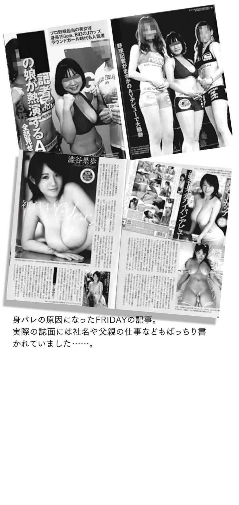

ここまで「ＡＶ女優という仕事」についていろいろ書いてきましたが、本章ではＡＶ女優のプライベートについても少し触れてみたいと思います。
現役時代、私が日常生活で心がけていたのはまず保湿。シャワーが多いので肌が乾燥しないようボディクリームやオイルは欠かせません。敏感肌なため、現場にも私物のケアセットを持参していました。全身にくまなく塗るのはもちろんですが、特に見られるしさわられるＫカップの胸は、パイズリなどで頻繁に使わなくてはいけないこともあり、しっかりお手入れしようとバストサロンに通い始めました。
剛毛や剃って生えたてのチン毛に擦れると、薄皮おっぱいが痛いのなんの。乳を上下に摩擦する動作で三角筋も疲れるし、パイズリ行為はかなりダメージを負います。また常に新しい技を編み出したい私はいろいろな角度からチンをパイで包んだり、亀頭で乳首を潰れるほど差したり、なぜかブリッジしながらパイズリしてみたりと、プレイが完全に生き急いでましたね……。
私本人が胸を酷使しないようアクションを抑えても、痴漢作品で「助けて！」と叫ぼうとしたら自分の乳房で口を塞がれたりと、男優さんからのあつかわれ方もめちゃくちゃ雑。「胸がデカいと感度が悪い」という都市伝説のせいか、全然いたわってもらえないんです。野獣と呼ばれる男優さんには、正常位で挿入されながら、タオルがわりに私の乳で男優さんの頭の汗を拭かれたことすらあり、あのまま現役を無理に続けていたらオッパイ死亡してましたよね、脂肪だけに。
また胸に限らず、ＡＶではマニア向けに接写やパーツ撮りも多いので、どこか一部分が荒れて赤くなったりするだけで気になるため、エステにも通わざるを得ませんでした。美容関係の出費は増えるけど、裸を見せる女優としてメンテナンスは必要不可欠です。
余談ですが、女性向けのＡＶは〝局部どアップ〟を映しません。男性と違って、女子はパーツ単体にあまり視覚的興奮を覚えない。「指フェチ」「声フェチ」「手の血管フェチ」などと言っていても、それだけで性的興奮はしないのです。
ＡＶデビューすると日常的にＳＮＳで見知らぬアカウントから男性器の画像だけ送りつけられるようになりますが、喜んでいる女優は１人もいません。身体の一部分だけを見せている時点で、女性へのアピール方法がそもそも間違っている。ただ、逆を言えば男性がボディパーツだけで興奮するおかげで、顔バレしたくない女性にはうれしい「マスク着用ＡＶ」なんかも成立するんだから皮肉なものです。
女子の会話って、やっぱり恋バナで一番盛りあがりますよね。ＡＶに出ている女の子たちも同じです。違いといえば、話し手も聞き手も下ネタに慣れてる分だけあって、夜の事情を詳しくシェアすることが多いくらいかな。業界人は女優・男優に限らずスタッフも含め、恋人かセフレかその両方がいたり、既婚だったりとパートナーがいない方がめずらしいので、恋愛依存性が高い傾向はあるかも……。体力削る仕事をしてるのに積極的に遊びへ繰りだせるのは、根本的に人恋しい性格なのかなと思います。
女優に都内出身者がほとんどいないことは前述しましたが、ペットを飼い始める子の数もすさまじい。月に１本しか撮らない専属女優だけでなく、撮影で忙しい売れっ子キカタンすら例に漏れません。私はどんなに可愛い動物でも自身が飼うと考えたら、「毎日デフォルトで家にいられちゃ息苦しい」「お世話するの大変そう」「命を預かるとか責任重大」とネガティブな印象しか出てこない。こんな自分ゆえ同棲経験もゼロですが、まわりは同棲なう・わずばっかりです。地元が離れているせいなのか、元来とても寂しがり屋なのか、彼女らは誰かと同じ時間や空間にいることをストレスより癒しに感じている。恋人や元恋人とのつきあいも長いことが多く、〝恋に向いている性質〟だなって思います。
そんな恋愛体質のＡＶ女優たちは、誘いには困らないため、彼女たちの口から「出会いがない」「出会いが欲しい」という言葉はめったに聞きません。だけど男性側はヤリモクばかりだから浮気や不倫相手にされがち。恋愛話をしていると、お互いに「もっといい人が絶対いるよ」「そんな男じゃもったいないよ」と言いあうことがしょっちゅうです。なので「新しい出会いが欲しい」「ほかの人にも出会いたい」という言葉はよく聞きます。
彼氏がいて風俗やＡＶの仕事をするってどんな気分なんだろう、と不思議に思うのですが、やはり恋人に文句を言われることは多いらしく「いや、仕事だから」「でも、セックスじゃん」の無限ループだとか。たしかに男性側の嫌がる気持ちもわかるし、女優の「ＡＶやってること知って近づいて来てるのに、いまさらなによ」という苛立ちにも納得。ただ彼女たちは口を揃えて「男優とはつきあいたくないわ」と言い切るので、立場が逆なら仕事だろうと恋人が他人とエロいことをするのは嫌なんだな……。
学生や社会人のころ周囲にいたのは「彼氏できない〜」とジタバタしていた女子ばかりだったのと比べて、ＡＶ女優は当然のようにセフレか彼氏かその両方がいて、モテモテな印象を受けます。性的魅力の高さもあるんでしょうが、尽くすタイプが多いので、お金または誠実さがなくても性欲だけはある男性がよく寄ってくる。需要と供給が上手くマッチングしているようです。
とはいえ彼氏や旦那の存在は、美容整形をしていても言わないのと同じで、わざわざ明かさないのが普通。いろいろとぶっちゃけるキャラでも彼氏の存在だけは隠す子が多く、これはもはや〝ファンに対する礼儀〟になってきています。
ＮＴＲ（寝取られ）ジャンルが流行してから、プロフィール欄の「ＡＶを始めたキッカケ」という項目に「寝取られ好きの彼氏命令で」という理由が増えました。しかしいわゆる「設定」ばかりで、実際にカメラのない場所やイベントの舞台裏などでそんな理由を聞いたことはありません。突如引退してしまったトップ熟女女優さんは夫公認でしたが、それはお金のためで「やっぱり撮影の日は嫉妬して機嫌が悪いから、夫婦仲が微妙になっちゃって……」と話してくれたときの悲しげな微笑が忘れられない。噂では新しい恋人が現れて離婚したと聞いたけど、辞める前はシャワールームにこもって撮影現場に出てこなかったりと、精神的に参っていたようです。
男優とつきあった経験がある女優の一人は、「ずっと喧嘩ばかりだった」と語っていました。ＡＶ制作では広いスタジオ内に同時進行で複数の撮影が行われていることがあり、お互いが別の女優や男優と絡みをしていると思うと心が乱れちゃうんだとか。ただ、同じ業界にいるだけあって、理解や共感は得られやすい。女優も男優も、一般人の恋人には「ＡＶは仕事だから」と説明しても「けどヤルことヤッてんじゃん」と言い返されてしまうので……。男優兼スタッフさんは、チンコ役で出ても顔だけは出さないように注意し、奥さんや彼女には出演者であることを黙っているそう。
とある元女優のヘアメイクさんは現役男優と恋愛結婚したのですが、そんなコソコソ出演可能な業界の事情を知っているゆえ、売れっ子だった旦那さんは男優業を完全引退しＡＤとして制作会社で新たに働き始めました。業界内カップルは、女優は引退しても男優とハメ撮り、監督は仕事を続けることが多いなか、その男女平等さが最近のカップルらしいなと思います。
結婚して人生を共有しあう夫婦ならまだしも、お互い相手を縛らない関係なら働き方に意見するべきではない。しかし、それがキャバクラでもアイドルでも異性に媚びを売るような職業なら、恋人としていい気持ちがしないのもわかります。独り占めしたいけど尊重したいジレンマがあるのでしょう。
ＡＶに出たせいで、男性から受けやすい嫌な行動があります。飲み会など少しプライベートな場だと「会話がインタビューみたい」「気安くボディタッチされがち」だったり、よりプライベートなお布団のなかになると「マグロか変態ばかりに遭遇する」「当然のように中出しされる」だったり。
後半２つの方が衝撃的なワードだろうと思うので、先にご説明しましょう。ＡＶには女性が積極的に攻める痴女ものが多く、更にユーザーが男優へ自己投影できるカメラ目線の主観作品が人気かつ、女優がフェラや騎乗位挿入などでリードする流れがお決まりです。よって一般男性には「ＡＶ女優はご奉仕してくれるもの」というイメージがこびりついています。また経験豊富であろう女性の高いスキルを味わいたいと、「すべてお任せします」と丸投げかつ総合格闘技試合の柔術家みたいにマウントより下のポジションを自ら取ろうとする。
デビュー前にお手合わせした男性50 人は、誰一人こんな受け身じゃなかったのに？ ＡＶに出演するということは、マグロ漁船に乗り込むことだと覚悟してください。私生活では、す●ざんまいのような解体ショーを開くことになるでしょう。これからってときにゴロンと横になられるたび、私は「ＡＶなんか出なきゃよかった」とめずらしく後悔の念にかられます。普段はそんなこと全然思いもしないのにね……。
マグロ現象に加え、一般女性にドン引きされてしまうような性的願望を持つ男性が「ＡＶ女優なら受け入れてくれるはず」と欲望を包み隠さずぶつけてきますし、中にはマグロ×変態という最恐のハイブリッドも。
まだ現役だったころ、先輩女優に誘われた食事会（という名の合コンかな）で知り合った若手ＩＴ社長の男性は、方向が同じほかの女優と帰ろうとしていた私をひっぱってタクシーに乗せ、自分の家に向かう強引さとは正反対に、とんでもないマゾ願望を持った人でした。「こんな自分を今までつきあった相手に明かせなくて、果歩ちゃんなら言えるかなって」と、私の職業であれば理解してもらえると期待を寄せたよう。
これだけなら、「せっかく一晩一緒にすごすことになった縁だし、今夜は夢を叶えてあげよう」と優しい気持ちになれたのですが、行為中に気づきました。「この男、全然動かん——」。挙げ句の果てに彼は目を閉じてアルカイックスマイルを浮かべ、「果歩様。ご主人様。俺にしたいこと何でもしてくれて構いませんよ」と性奴隷ごっこを始める。え？ やりたいことなんてないんだけど……。誘った側が丸投げやめて!?
それでもＡＶ女優・澁谷果歩としての誇りがあって、ベッド上の顧客満足度を高くすべく、期待に応えられるよう頑張りましたよ……。しかし「俺のアナルを開発して。初めてをあげる」とか面倒くさいことまで頼まれ疲れてしまい、そっとフェードアウト。
そもそも作品で見せるテクニックをプライベートでやってもらおうなんて贅沢を、飲み会で小１時間話した程度の立場で求めるのはおかしくありませんか。そんなワガママ、せめて恋人か愛人になってからでは？ マグロになるには、それにふさわしい資格が必要です。しかし、それでも任されっぱなしで心身共に疲れるだけのセックスを、貴重な休みを使ってまでしたいとは思わない。
ＡＶ女優はマグロと変態ばかり寄ってくるのに加えて、フィニッシュは中に出されがちと、救いようがないダメンズちんぽの観光名所。職業柄、生理日を調整できるピルを飲む子が多数というのもありますが、アダルトビデオでは中出しシーンが頻繁に起こるから「自分もやっていいだろう」と思わせてしまうようです。作品で見せる膣内射精のほとんどが擬似でも、本物のように演出しているから、実際に中出ししてると勘違いする人がほとんど。
愛情を持って接してくれるような関係ならともかく、セフレやワンナイトを狙う男性は女優をＡＶのなかと同じように手荒にあつかうので、決して期待しない方がいいでしょう。
それと私がすごく困ったのは、コンドームを「着けて？」と頼まれることでした。ゴム着け上手は風俗嬢であって、アダルト現場じゃ男優が自分でスピーディに着けるものなんですよ。なんなら私が絡み中にＮＧ出したのって、コンドームを上手く着けられなかったときばかり……。ゴムを下ろすときの力加減は難しいし、痛かったり苦しくないかと不安になるので、正直やりたくない役目です。着けてほしいとお願いされてもかわいいと思うどころかダサいと感じるため、自分で自身をスルッと被せられる自立した人が好みだな。きっと私のタイプは、「ＡＶ女優」って肩書きにテンションが上がるような男性じゃないんでしょうね。残念です。
いわゆる「ギャラ飲み」には行ったことないけど、本当に「ギャラ欲しいな」とか、むしろ「お金あげるから時間返してほしいわ」と思うのは毎回です。そもそも私はＡＶの仕事とは関係なく、お酒の場が怖くて……。というのは、なにか失礼なことをされても「酔っ払ってたからさ」とアルコールのせいにしてヘラヘラと謝られる危険性がある。下戸の自分からしたら「じゃあ他人に迷惑かけないよう飲まなきゃいいのに」と思ってしまうので、つきあいでもなければ飲み会へは行きたくない。
さらにＡＶ女優だと、インタビュー風の質問ラッシュやセクハラ寄りのボディタッチに遭うため、学生や新聞記者のころより嫌な思いをするチャンスに溢れているんです。「さわっていい？」「さわらせて、お願い！」って、合意をとって胸を揉もうとする人もいてゾッとする。
それも理由が「凄く大きい胸だから『どれくらい重いんだろう？ やわらかいんだろう？』っていう好奇心であって、やらしい意味じゃないから！」ってめちゃくちゃな言い訳されるんですが、君の気持ちは関係ないぞ？ 問題なのはさわられる側が不快だと思うかどうかだからな？ とセクシャルハラスメントの誤認識を真面目に正したくなります。でもそんな発言をしたら飲み会全体の空気を壊してしまうのでその場は笑ってごまかし、帰宅してすぐに交換したＬＩＮＥを消去するぐらい。
元か現役かは関係なく、アダルトビデオに出た女性は「ヤらせてってお願いすればヤらせてくれる」人種だと思われがちです。会話における質問もＡＶの仕事に関するトピックばかり。
引退して「そろそろ彼氏ができたらいいな」と口にしていた私のために、親しい女優が少人数の食事に誘ってくれたのですが、男２女２と合コン的な雰囲気に「育った環境とか趣味や休日の過ごし方を聞かれるのかしら？」と緊張しながら話し始めたら、男性陣がふる話題は、お酒が入るにつれＡＶ撮影やセックスに関するものオンリー。40 歳の建築家と医師は「３Ｐって楽しい？」「スパンキングって気持ちいいの？」って、その年齢になったら人それぞれ好みが違うってこともわかってるでしょうに。まぁ、20 代前半のミュージカル俳優も50 代のバンドマンも女性からキャーキャー言われる職柄のせいか「クンニなんてしたことない」と言ってたり、性行為における常識感覚は人によって違いが大きいけども。
ＡＶ女優にとって初対面のエッチトークはイベントや取材やらで経験し飽きていて、楽しいのは男性側だけなんです。男子からすれば、下ネタにも引かないし、むしろ面白く返してくれる女子との飲み会が新鮮かもしれないけれど、こちらにしてみればプライベートのはずなのに「これ仕事？」って白けちゃって、どんどん温度差は広がっていきます。そうとは気づかせないほど、我々がエロネタの提供や営業スマイルに慣れすぎているのもいけないのかな……。
「どうしてＡＶ女優になったの？」「いつからオッパイ大きいの？」なんて１ミリもオリジナリティのない質問だし、「デビュー時に答えたから、ググってくんないかな」とうんざりする。
ええ、ＡＶ女優と飲んだらＡＶの裏話を聞きたいのはわかりますとも。でもプロとしては宣伝効果もないインタビューを受けたくない気持ちもわかってほしいし、なによりＡＶの話題でしか盛りあがれない男性とは恋愛する未来を描けません。「この人はＡＶ女優の私に興味があるだけで、それ以外の私を知ろうとはしてくれないんだな」と傷ついちゃうもん。
ＡＶ女優は「おさわりＯＫ」とも思われがち。しかも腰や肩でなく胸や尻など性的なパーツ、普通の女性なら完全アウトな部分までもセーフだろうとさわってくる人が多い。いやむしろ大事な売り物だから気軽に手を触れないでおくれ……。
老舗ＡＶメーカーのイベントの打ち上げで連れて行ってもらったお寿司屋さん。隠れ家的なロケーションで、ほかの女優さんたちを招待したこともある、馴染みの店のようでした。ひとしきりお寿司を握ってもらい食事も終わるころ、大将から「よければ最後に写真を撮ってもらっていいですか？」と声をかけられました。もちろんいいですとも、胸さえさわられなかったなら。
その大将、２ショット写真を撮る瞬間に、先程までネタを握っていた手でナチュラルに私の胸を揉んできたんです。「おっぱいメチャクチャ大きい〜」ってアピールするような感じのポージングで。おや、それは寿司じゃないよ？
バストに向かって指をさされるくらいならいいんですが、直接触れてこられたのには驚きました。急なショックに身体が固まってしまったんですが、そもそもクライアントが目の前にいる状況だから空気を悪くできず、怒りたくても怒れない。なにせ彼らがよくくる店なので、「もしかして、いつも女優をさわらせてるんじゃ……」とも疑ったんです。それくらい自然にわいせつ行為を冒してきまして。
一緒にいた当時のマネージャーが、「あ、ちょっと胸は……」と申し訳なさそうに注意してくれましたが、その言い方も、遠慮がちな姿勢もなんだよって思いました。胸に限らず、どこだろうと無断でさわってほしくないし、私のかわりに激怒してもらいたかった。タレントはファンサービスしなきゃいけないからキレるなんて無理な話で、本人がファンやクライアントに嫌われないよう言いにくいことを伝えるのが現場マネージャーの務めです。
お寿司はおいしかったのに、その〝締め〟で最悪な気分になりました。接待されに行ったはずなのに、逆に私が接待したみたいでわけがわからず……。後日ちゃんとメーカーさんにもクレームを入れたところ、温泉ロケ中の地方まで営業部長さんが謝罪に来てくださいました。一番悪いのは寿司屋の親父さんだけど、おそらく「なんだ、さわっちゃダメだったんだ」としか思ってないでしょう。
実はそういうことって結構起こります。寿司屋の件は同席したマネージャーが注意してくれたり、後日メーカーさんが謝ってくれたからまだいいものの、まわりが目撃していながら何も言ってくれないどころか、笑ってごまかそうとセクハラ加害者をサポートする最低な場面もありました。
澁谷果歩として自分の胸は名刺がわりだと思っているので、タレントの立場で表に出るときは強調する服を着るようにしています。だからじっと見られたり、驚くリアクションをしてもらうのは構わないんですけど、「どうぞさわってください」という気持ちは決して持ち合わせていません。許可も得ずに女性の胸に触れるのは犯罪行為ゆえ、さわられることも考えてない。さわりたくなるという欲求は置いておいて、実際に行動に移したらあかんでしょう。
そういえば以前勤めていた新聞社も、昔は新入社員歓迎のボーリング大会にＡＶ女優を呼んでいたらしいのですが、私たちの時代には「ストライクを決めた新人がノリで女優に抱きついた」せいで呼べなくなっていました。ＡＶ女優はおさわり自由だという認識の一般男性は、どこにでもいるようです。
恋人でもない男性にさわられているのは「アダルトビデオという映像のなかだけ」という事実はもちろんですが、無課金でさわるのもおかしいと思わないのでしょうか。「ＡＶ女優」という職業なのに、ボランティアでヤリマンやってると勘違いしてるみたい。
それなら、一般男性じゃなくアダルト業界の男性となら不快な思いはしない？ 実は、女優が同職種の男性陣と恋愛することは基本タブーです。だから真剣恋愛から結婚に発展するまでは、皆がコソコソとつきあい続けています。私もＡＤ、ヘアメイク、男優、監督から個人的に会おうと現場でコッソリ連絡先を渡されたことがあります。
裸を見慣れたアダルト業界の人間といえども、そこは男と女。仕事で得る一時だけの恋愛感覚だけでなく、プライベートにまで発展する場合だってもちろんありえます。職場を通じてカップルが生まれるのは、どんな世界でもめずらしくないこと。さらにＡＶのように特殊で、普段はまわりに隠して生きるような職種なら余計に増えるでしょう。制作側がほぼ男性で出演側が女性だらけという比率もあって、監督やスタッフの奥さんの多くは元か現役女優という印象を受けます。
ユーザーも知るところでは、ＳＯＤクリエイト社外取締役の溜池ゴロー監督と、元女優でアダルト業界健全化を図る一般社団法人表現者ネットワーク（
一般企業ならセクハラ認定される下ネタトークも、アダルトビデオ制作では業務上必要な情報にあたります。面接用シートには「初体験の相手と場所」「オナニーする回数・やり方」「好き＆ 嫌いなオモチャ」などが記載されているし、口頭で確認もされます。女優の性癖についての質問は、到底避けて通れません。じゃあ、ＡＶの仕事でセクシャルハラスメントになるのは、どんな状況？
たとえばある古い銭湯で撮った作品の舞台裏では、男湯で本編を撮り、出演者が絡み前後のシャワーを浴びるのは女湯と使い分けていたのですが、女優は私一人のため風呂場を独占するのは忍びない。そこでほかの男優さんが入っている時に「私もシャワー借りますね」と一緒に入ったら興奮させてしまったらしく、「勃っちゃった。していい？」と生で挿入されました。みこすり半であっという間に発射してて、「すごいな、また出してる」と感心しちゃったのですが、冷静に考えたら「いや、撮影中だけどカメラ回ってないぞ。バレたら怒られるんじゃ……」と怖くなりました。すでにその男優さんと絡んでいたこともあって行為自体に麻痺していたこと、さらにまだ現場経験が浅かったせいで、そういうものかな、と思ってしまったんですよね。今だったら絶対にそんなことおかしいと言えるのに。
男優からのセクハラは問題ですが、ベテランだろうと有名であろうと女優には男優を共演ＮＧにする権利があるので、まだまし。これがプロデューサーや監督になると、女優に仕事を与えられる立場ゆえ、パワハラ的側面もあって大問題です。
今はどんな作品も撮影前に内容を説明しなくてはいけない決まりがありますが、以前は「女優のリアルな反応が欲しい」「発売前の情報漏洩を避けるため」という理由で台本が用意されないことはめずらしくなかった。その弊害で、すべての撮影が終わった後に「もう１本フェラシーン撮るから」と監督に噓をつかれてお手洗いへ連れて行かれ、射精するまで舐めさせられたという女優の話も聞いたことがあります。彼女いわく「もうほかのスタッフさんたちが帰ったのに変だなとは思ったけど、監督に言われたら『そうなのかな』って疑いにくいし、抵抗できなくて」。変だなと勘づいても、力関係を考えると言い出せないのです。
私も監督面接中、マネージャーが席を外している間に乳首に吸いつかれたことがあります。作品のドラマシーンに使うピンのノーマル映像を撮り、その後に別日の絡み撮影に向けてミーティングをしようという話があって、英語教師役の私がホワイトボードの前で教鞭を執る姿をカメラに収めたら、「じゃあ打ち合わせ始めるからマネージャーさん呼んで来て」とＡＤを探しに行かせている間に迫ってきたんです。衣装から私服に着替えていると突然「おっぱい見せて」と言われ「撮影に向けてカラダの確認かな……」と思って素直に脱いだら、チンポまで出してきたのでようやく「おぉ！ ろくでなし監督か」と気づきました。
ただ当時の私はプライベートで男性と出会う時間も機会もなくて、撮影じゃないセックスをしたいのにできないジレンマを抱えていました。なので「ラッキー♪ 」とポジティブに考えることができた。できた、というのは、撮影が控えているから監督との雰囲気を悪くすることは避けたいので、逃げることが怖かったんです。それに、顔や名前を出して活動していたＡＶ監督ゆえ、彼好みの女優になりきればＳＮＳやインタビューで私の名前を出してほめてくれるかもしれない。キャリアを考えれば乗っておいてもいいか、と思うようにしました。暴露するのは、こうして後からできますから。
ここまできたら本番当日も手を出されるという確信はあったけれど、すべてのシーンが終わってからに違いないと予想していました。だって、まがりなりにもディレクターなら、まずは作品づくりを優先させるはず。ところが、彼にとっては撮影前の方がタイミング的に都合よかったようで、当日、撮影現場のホテルのスイートルームでスタッフが来るまでの時間差を利用して事におよんできたのです。
ちょうど撮影の前日まで１週間ほど資格を取るため休みをもらっていて、全然アソコを使っていませんでした。そして今回の作品には絡みの相性がいい巨根男優さんが最初のシーンで出演するから、その人のために取っておこうと楽しみにしてたんです。「○○さんにこじ開けてもらうつもりだったのに……」と本当にショックだったな。なにより、撮影が始まる前に女優の体に負担をかけるなんて、監督自身が出演者のパフォーマンスを下げるリスクを考えない無責任さに呆れました。男としてでなく、監督として深く軽蔑した。冷静に考えればおかしな話ですが、当時の私は撮影の直前に挿入されたことに対して最も腹を立てていたんです。別に手を出されるのは構わないけど、マンを痛めるから作品撮り終わってからにしてほしいよね、と。怒るポイントがずれてるのは重々承知だけど、ここが私個人の許せない部分でした。
ただ面白かったのは、その監督のプレイが作風のまんまだったこと。「イキそう」と言ったら「イクな。俺が許可するまで駄目だ」と命令し、盛り上がってきたら「イケ、イケ、イケ」と呪文のように唱えてくるんです。撮影内容と言うこともやることも全部一緒なので、腹筋崩壊するほど爆笑しそうなのを抑えようと身体をピクピク余分に動かしてイク演技してました。そしてプロの女優としては「撮影と同じセックスさせるとか、仕事量２倍やん」と、タダ働きを嘆きました。こっちからすればプライベートなのにＡＶと内容が同じとか、ガッカリの極み。
彼との撮影はその１回きりで他に入りそうな予定はなく、なにより自分がよくてもほかの子が被害に遭ってはいけないので、タイミングを見て事務所にちゃんと報告しました。実は、これが当時そろそろ辞めたい、また移籍したいと思っていた私にとって有利に働いたんです。プロダクションに「所属女優を守れなかった」という負い目を感じさせることで、お別れ交渉をスムーズに導いてくれた。私にとってはそんな感謝すべきメリットを与えてもらえたけど、同じことをされて泣き寝入りする子がいちゃいけません。
相手が男優だろうとＡＤだろうと監督だろうと、所属女優が手を出されるという事実は事務所の無能さを露呈することになります。恥をかかされたプロダクションは権威を取り戻そうと男性側に迷惑料を請求したりＮＧにしたり、かなり厳しい態度を取るそうです。
男優は９割以上がフリーランスだし、ＡＤも監督も雇われ側なら立場が弱いので厳しい対応がとれますが、事務所が強気に出られない立場の人間もいます。それはＡＶメーカー社員。しかも女優を専属にする決定権があるような敏腕プロデューサーだとゴマをするしかないため、女性やゲイのマネージャーが「私が抱かれてこようかな」とか半ば本気で言い出す始末です。飲み会で若手イケメン男性マネージャーが点数かせぎのつもりでベテランの女性プロデューサーにキスして、それを武勇伝のように語ってたこともありましたね……。
とはいえ女優に対しては、昨今のコンプライアンス意識の高まりにより大手メーカーさんでは「社員は出演女優にさわってはいけない」というルールが徹底づけられています。スキンシップが激しくすぐハグしがちな女優は、逆に社員から「会社のルールで駄目なんです！」と必死で逃げられたりすることも。あるメーカーでは、若手社員はこのルールを守っているのに、社歴が長いプロデューサーだけは衣装をなおしに直接さわってくるし、あいさつでお尻を叩いてきたり、谷間に指突っ込んだりとスケベおやじフル稼働。あまりの異様さに、「ほかの社員さんは女優にさわらないよう神経質なほど気をつけるのに、□□さんだけは気にせずガンガンさわりますよね」と、何度か別のプロデューサーたちにわざと話題をふったことがあるのですが、「いやぁ、あの人は……」と言葉をにごされたり、「そんな反応に困ること言っちゃダメだぞー」と誤魔化されたり、「それに関して僕は何も言えないです。相手は上司なので……」と正直に頭を下げられたり……。皆、わかってはいたけれど立場的に注意できず見て見ぬふりをしていました。
某アパレルメーカー社長が自社社員を食い散らかそうとしたと疑われるセクハラ報道同様（当初は否定したが、誘い文句とハートマークだらけのＬＩＮＥが明るみに出て辞任。ただし、社長の座を譲っただけで株主として居続けている）、権力者は自分の庭で好き勝手やっても目をつぶってもらいやすい。普通の企業に勤めていたってこうなんですから、社会的にグレーな業界で働く個人事業主のＡＶ女優はさらに大変です。きちんと自衛していかないといけません。
男優や女優は個人事業主でも、メーカーやプロダクションは会社ですから、そこは一般企業と同じく隠蔽癖があり、どんな規則が存在しようとベテランやトップは例外だったりする。なので、ハラスメントの苦情は相手先の下っ端社員でなく、所属先の事務所へ進言しましょう。それでもたいして効果がなさそうなら、がんばって自分のフォロワーを増やしてＳＮＳで明かすとか。なんだかんだ言っても彼らが優位に立てるのは、社内や仲間内だけですから。
周囲に黙ってこの仕事をしているＡＶ女優たちが、もっとも恐れているのは「身バレ」。私の場合、事務所と単体契約をしたのが６月で、デビューはその年の11 月だったので、ＤＶＤが発売されて身バレを覚悟するまでの〝安心して過ごせる期間〟は十分ありました。とは言ってもＡＶメーカー面接を受けていた当時はシフト制ながらフルタイムで働いていたので、職場でなにか言われる前に正社員から「日英通訳など副業をしたくて」とアルバイト雇用にしてもらい、発売後には「忙しくなってきたので辞めたい」と申し出ました。実際に通訳もやっていたし、社員を辞めてからデビューしたので副業禁止に触れる規約違反はしていません。ＡＶ以前に、その辺りはきちんとしておかないと。
一方で、アクセスがいい都心の実家から離れる理由はまったくなくて困りました。澁谷果歩の情報が解禁された日以来、帰宅時は毎晩自宅のドアを開けるのが怖かった。母の「おかえり〜♪ 」という明るい声を聞いて、ようやくホッと胸をなでおろせるのです。もちろん、そんな日は長くは続きませんでしたが。
「ＡＶ女優は数え切れないほどいるし芸名を使っているのに、どうしてバレるんだ」と思われるかもしれませんが、そのほとんどは知人がネットの画像で偶然見つけてしまうケースです。たとえば、まとめサイト系のウェブ広告にＡＶの画像や動画がめちゃくちゃ使われている。「自分の彼女に似た子が映ってるから、クリックしてみたらより大きくて鮮明な動画が観れて……。裸も知ってるし、もう本人でしかなかった」という話、デビュー前ですら知人男性から聞いたことがあります。エッチなものは漫画しか読まない私のスマホ上ですら、３次元のアダルト広告だらけなので、実写のエロ動画を嗜む人たちならあっという間に見つかってしまいそうですね。
雇われ社員を早々と辞めて、年数回しか〝澁谷果歩〟じゃない仕事に携わることがなかった私は、同僚やクライアントにバレて苦しむことはありませんでした。ただ、遊園地とか世界的に有名な猫のキャラクターがいるアミューズメントパークでバイトしていた女優は「イメージにそぐわないので」と辞めさせられたし、職種によってはバレが雇用に影響します。猫じゃなくてネズミさんがいる園でも元女優が職を得た際に、過去とはいえ問題になることが予想されました。ＡＶ女優だって夢を守る仕事を続けていることには変わらないのに！
仕事を辞めされられること自体が倫理的にいいか悪いかはともかく、「アダルトビデオに出ている／出ていた」事実は、批判されるリスクを抱えた情報です。だから、ホクロやら歯並びやら声やらどう見ても本人だろうと、某有名アニメの主役声優さんみたいに所属事務所が世間に向けて表向き否定しなくちゃいけなくなるんです。対人でのやりとりが多く対象の年齢層が広い仕事ほど、副業女優や過去にＡＶをしていた女子は気をつけないと。
それに比べて友人関係は「縁を切れば済む話」と私は思ってしまうのですが、実際にはこちらで嫌な思いをする子が非常に多いよう。「ひさしぶりに地元の同級生から連絡があって返信したら、単にＡＶがバレただけだった」「大学の仲良しＬＩＮＥグループで画像を流された」などという話はよく聞きます。私にもＳＮＳを通じてダイレクトメッセージが届いたことが何度もありますが、ひとつも開いていません。だって、もう関係のない存在ですから。彼らは「知り合いがＡＶデビューした!! 」と面白がって、自分たちのネタにしたいだけです。こちらに仲良くするメリットはまったくありません。
仕事でつながっているならある程度の不満は我慢しなくてはいけないけれど、ビジネス的に利害がない相手とは疎遠になっても一切問題はないと思います。むしろ個人的には「つきあいで予定入れたりＬＩＮＥ返すのが面倒だったからちょうどいいわ〜」くらいの気持ちでガンガン消去できちゃう。そもそも、趣味も食事も独りで楽しめるし、世の女子が「祝われなかったら寂しい……」と語る誕生日だって、キリストでも天皇陛下でもないのに他人から祝われたいと思わない。気をつかわせたり「祝ったのに祝い返されない」問題をさけたいので、自らのバースデーは非公開です。死ぬときだって、その瞬間を目撃してショックや迷惑をかけるのが申し訳ないため、看取られない方が楽じゃないかと思う。これはもう持って生まれた性格でして、よくいえば他者への依存が弱く、実際のところ、まわりを気にして疲れるのが煩わしい面倒くさがりなんです。
そんな自分は、親兄弟以外の男性と大学以降に増えた連絡先を、デビュー前にまとめて消す徹底ぶりで身辺整理をしていました。ＡＶ女優になったことを知られれば、うっとうしいメールや電話が特に異性から来ることは予想できたし、そんな暇つぶしの興味本位な相手に返信するなんて時間の無駄です。ただ高校以前の友人は親同士のつきあいもあったため、急に音信不通になると自宅へ連絡が来る可能性があり、親バレ前は消せませんでした。このときばかりは「女子校だからすぐ噂にならなくてよかった」とホッとしたものです。
私の場合、親に情報が漏れたきっかけは、新卒で勤めたスポーツ新聞社でした。男性だらけかつ、噂大好きマスゴミにとって、元社員のＡＶデビューは格好の餌。そして先輩だったプロレス担当記者が元プロレスラーの前田日明さんに、私がアダルトビデオに出たことを教えてしまいました。そして、昔からの知りあいだった父に、心配して電話をかけてきたそうです。「ＡＶ業界はヤクザが仕切ってる。危険だから絶対に辞めさせた方がいい」とおっしゃっていたとか。
前田さんといえば「ジ・アウトサイダー」をはじめあらゆる格闘技団体に携わり、ラウンドガールにＡＶ女優を使うなど実際にアダルトの世界とつきあいがありました。つまり、そのプロダクション関係者が前田さんに「暴力団が絡んでいる」と確信させたんでしょう。
父に伝われば当然ながらその情報は母にもシェアされ、感情的な母親は「人前でセックスするなんて頭がおかしい。お父様、この子に精神科を紹介してあげて！」と父に頼み込み、知りあいの精神科医には前もって事情を説明し「娘に『ＡＶに出るなんて精神異常だから』と言って、辞めるよう説得お願いします」と裏で診断の手回しまでしようとするヒステリーぶり。もちろん、初診当日は母も同席しました。
そんな困った依頼をされた先生は「ちょっとお母さん抜きでお話しさせてもらえる？」と母の退室後に私の言い分を優しい態度と表情で聞いてくれ、その後、こう言いました。
「君はとても論理的な思考で、自分なりの考えを持って今の仕事と向き合っているのがわかる。精神科を受診する必要は何もない。ただ親と同居してる以上、ヒステリックになったお母さんの影響を受けて、自分まで不安定になってしまうかもしれない。お薬を出すから、お母さんの感情の起伏が酷くなったら飲んでもらい、自分も飲んで、２人で半分こする形にしよう」。
さらに「圧迫した家庭環境で育ってきたみたいだから、診療じゃなくてカウンセリングを予約していろいろ話してみるとスッキリするかも」と助言を受け、別日に女性カウンセラーと話したところ、「あなたのお話面白いから、もっと聞いてたいわ」という反応が。そこでトークに手応えを得て、インタビューなどでも素を出すようになりました。皮肉にも、無理やり連れて行かれた精神科で「バレを気にしない方が、話せるネタもほかの女優より個性的になって面白いんじゃない？」と自分の売りを気づかされたのです。
それまではバレるのが怖くて、新人女優として取材があっても無難な受け答えしかできなかったのですが、バレたことで武器が増えた。もともと性格的にウマが合わない母とも距離を置く理由ができ、あこがれの一人暮らしもできた。無難な〝清純派ＡＶ女優〟とかいう闇しか感じない設定を守らなくてもいいし、自分らしくいられて結果オーライ……と思う部分はあります。少なくとも、私自身はそう前向きになっていいでしょう、自分の人生なんだから。
ただ、当時の事務所だけはダメです。実は私の身バレ話にはまだ続きがあって、元同僚や友人、親だけでなく不特定多数の人間に身元がさらされる不測の事態が起こったのです。それも、スクープ系週刊誌『ＦＲＩＤＡＹ』の袋とじで——。
前田日明さん経由で親バレした１週間後、せめて知り合いから親の耳に入っていてよかったと思える出来事が起きます。週刊誌や夕刊紙の記者から父親に「娘さんのこと、ご存知ですか？」という電話がかかってきたのです。コラム執筆や記事の取材相手にもなったことがある父の連絡先は各メディアに共有されており、知らない番号から電話がかかってくることはめずらしくありませんでした。
どちらにせよバレることには変わらないのですが、会ったこともない記者が不躾にバラすんじゃなく、ちゃんと知人が心配して教えてくれて助かった。今では前田さんに感謝しています。
ちなみに週刊誌には私も記者時代に名刺を交わしたことがある人たちがいましたが、連絡先をすべて消してスマホごと替えていたので直接連絡はとれなかったのでしょう。ただ『週刊新潮』の記者だけは以前と担当が替わったようで「新しく引き継いだので、ごあいさつしたい。プロ野球を取材されていたころのお話をいろいろおうかがいできれば」と、やはり父の連絡先である自宅に電話をしてきました。まだバレる寸前だったため「ちゃんと連絡を返しなさい」と親に言われて会う羽目になったのですが、当然ＡＶのことを聞かれて面倒だった……。もう新聞社を辞めた元記者に野球現場の裏事情なんてたいして聞くわけはなく、「ＡＶってギャラいくらもらえるんですか？」「何でデビューしたんですか？」と「なぜ貴方にそんな話をしなくちゃいけないの？」という個人的な質問ばかりでした。
しかし相手は話しやすい子だと思ってくれたのか、薬指にリングをはめているというのに「取材じゃなく普通に飲みに行きませんか？」と後日メールで誘われて嫌な予感しかせず、「仕事でないのならお断りします」と返信したら二度と連絡は来ませんでした。この方はビジネス関係より肉体関係を持ちたかったのでしょう……。まぁ、ＡＶ女優でなくとも女性ならよくある話。
正直、私は勤めていた会社で噂になるのは仕方ないし、かといってすでに辞めたのだから何の問題もなく、記事にすらならないと思っていました。新聞社で働く人たちが過去にＡＶ出演していたと騒がれたのも現役の社員だからであって、元社員でしかない自分は世間的に大した話題にならないはずだと。
ところが、むしろ退社しているからこそマスコミ仲間の新聞社に気を使って黒い目線を入れる必要もなかったのか、ゴシップを好む多くの夕刊紙や週刊誌、特に『ＦＲＩＤＡＹ』ではご丁寧にカラー袋とじまで作られてしまうなど、予想外のネタになってしまいました。あまりの大々的なあつかわれぶりに、業界内では「アダルトビデオにありがちな、『元地方局アナ』とかの設定だろう」と思い込まれ、初めて会うスタッフや女優からは「え、本当に記者だったの？ そういう
もちろんプロダクションへも取材が行っていましたが、当時の社長から悪気なんてなさそうに、かつ「困ったよね〜」と人ごとのように報告されて呆気に取られました。
「え。記事を止めてくれないんですか？」
「そういうの無理なんだよねー」
忘れません、あの笑顔とノリの軽さ。「ＡＶ出てもバレないよ」から始まった勧誘トークは、デビューメーカーを決める後戻りできない段階で「先に言っておくけど、バレるかもしれない」へと変わり、デビュー後には「記事もう来週には出ちゃうって」という取り返しのつかない状況に。「頼りにして」と言っていた事務所はまったく頼りにならないとわかった瞬間です。
この時点から、私は「友だちや家族ぶった態度を取るくせに、ＡＶマネージャーに個人的な悩みを相談しても何も解決しないし、むしろ女優のプライベートな不幸は彼らにとって喜ばしいことなのだ」と学んでいきます。たとえば同棲彼氏との不仲を嘆いている子がいて本人たちは別れたくないのに、破局してくれれば仕事が入れやすくなる事務所は万々歳。私の場合はＡＶ大反対な両親との共同生活がたいそう邪魔だったようで、女性マネージャーに「私も幼い娘がいるけど、貴女の母親みたいにはなりたくない。好きなことをやらせてあげるべき」とドヤ顔で親批判され不快でした。しかし、一人暮らしがしたいと言えば馴染みの不動産屋をすぐに紹介してくれて大変便利。「私の親を悪く言っていいのは私だけなのに……」という違和感は拭えなかったけど、これがアダルト勧誘の際に問題として挙がる洗脳的なものかもしれません。
つながりの深いコミュニティをシャットダウンすることで、事務所にしか居場所がないように導き、容易にコントロールしたいのでしょう。「サークル活動かよ」ってくらい、やたら食事会だの鍋パーティーだのイベントを催そうとするのも説明がつきます。ご飯を独りで食べたい派の私には逆効果でしたが、田舎から出てきて知り合いが少ないうえ、まわりに言いにくいＡＶなんて仕事を始めてしまったら、「タダ飯だし」に加えて「理解者がいる」と惹かれる気持ちもわかる。
「元新聞記者がＡＶ女優に！」というニュースの出どころは、「メーカーが売り込んだ」とも「事務所サイドが持ちかけた」とも噂されました。同時に私の前職から、気づいたマスコミの人間がネタにした可能性も否定できない。とはいえ当時、どうも怪しいと思ったのは、いろんなマネージャーから「自分たちが仕組んだんじゃない」と必死すぎるアピールをされたこと。しかし、それが計画通りであれ何であれ、彼らがこの事態を喜んでいたのは後に明らかになりました。
アリスＪＡＰＡＮデビューの際は〝バレないための配慮〟として出身地も経験人数も性格的なキャラクター設定もすべて適当なものがパッケージに書かれたものの、半年経ち、別の単体メーカーであるアイデアポケットへ移籍するとなったときには、本当のプロフィールの方が話題になるからと「大○翔○に取材した元爆乳美人記者」などと表記されていました。それ自体は売り上げのための戦略と理解できるのですが、プロデューサーとの初顔合わせで、「このメーカーさんとの取引は初だから俺が行く」とやる気を出して同行した事務所オーナーが最低最悪。「この子、こんな話題になったんですよ〜♪ 」と、まさかの身バレ記事を取り出してきたんです！
私にとって苦しかった日々の原因となった記事をニコニコしながら開いて見せて、そんなものが大事に保管されていたことすら知らなかった自分は驚きと、続いて文句を言いたくても、「これからお世話になるプロデューサーさんの前」というシチュエーションに下を向き、ただただ無言。普段マネージャーとして現場に出て女優と一緒にクライアントと接さないプロダクショントップゆえの失態ともいえますが、当たり前のことを何もわかっていなかった。
身バレで嫌な思いをしない子なんていません。オーナーは私が親バレして週刊誌にも書かれてと落ち込んでいたときに慰めようとよく遊びへ誘ってくれていたのですが、その元気がなかった時期を知っているにもかかわらず、平気で私の辛い過去を得意気に見せつけたことに裏切られた思いでした。
せめて、「売りになるから当時の記事を持参してもいいか」と事前に私の許可を取ってくれてさえいれば、「何て無神経なんだ、この男!! ふざけんな」と恨まなくて済んだのに。
そもそも、週刊誌に身バレ記事を出されてしまったことは事務所の恥であり、絶対に誇りとして扱ってはいけません。なぜなら私は当時〝パブＮＧ〟だったので、目立つコンビニ写真週刊誌などに女優名や写真が載せられるのは完全なルール違反でした。

日本の高齢化＆ 少子化社会にとってはありがたいことに、キャリアウーマンが増えた現代も結婚・出産願望を持つ女性がマジョリティなのは変わりません。なかでもアダルト業界で生きる女子たちは、ことさらそのあこがれが強い印象を受けます。引退理由は「寿がいい！」と希望を口にする女優の多いこと多いこと。実際に入籍を機に辞める子は沢山いるし、「彼氏と結婚の話が出てるから、もう辞める」と決める新人がいれば、結婚相手が現れないから「引退時期を見失った」と嘆くベテランだっています。結婚をきっかけに引退宣言までしたけど「旦那の借金が発覚して、続けることにした」なんていう例も……。本人の心境は複雑かもしれないけれど、人気メーカーの代表的専属女優ゆえ、ファンと事務所にはうれしい撤回でした。また、つきあっていた相手の束縛が強いせいで辞めたのに、「結婚してくれないから復帰する」とわずか半年でＯＬからＡＶ業界に戻った売れっ子企画単体女優もいたり。
人生で一度も「結婚したい」とも「子供が欲しい」とも思ったことない自分にとって、これには違和感しかありませんでした。両親はなかよしだし、不倫恋愛や親しい友人の離婚を目の当たりにした経験もゼロだから、結婚生活を忌み嫌う理由は見当たらない。でも、ディズニー映画より少年漫画を愛したためか、ただ単純にまわりの人と同じことをしたくない性格ゆえかわからないけれど、私はむしろ「結婚したくないから」この仕事を試せた部分があります。
実はデビューする前、親に何度かお見合いをセッティングされました。しかもそれが「新しい彼氏ができた」と明かした途端だったので、すごく嫌な気持ちにさせられた。だからＡＶ出演が決まって契約書にサインするときは「もうこれで後戻りできないぞ」という不安だけじゃなく「もうこれで親はお見合いなんて二度と押しつけられないぞ」なんて心の声も聴こえたんです。私には後者の方が大きく響き、「これからは両親の望む人生を、まるで自分も望んでいるかのように演じ続けなくていいんだ」という解放感を得られました。
女性がアダルトビデオに出るのを決心する理由は、１つだけじゃない。円グラフで描けば最も大きい要素が「お金」だとしても、面白い経験を求めての「好奇心」や、テレビ出演や音楽ライブという芸能活動をしたい「夢」だって理由になる。ただし恋愛や結婚に関する「夢」を抱いていれば、その未来は描きづらくなるでしょう。それでも覚悟して選ぶのは、他に得られるものがあまりにも魅力的か、他を優先せざるを得ない環境にあるか、目先のことしか見えてないか……。
こんな私だって、いつか、もしかしたら入籍も出産もしたいと願うかもしれない。仮にそうなれば「どうしてＡＶなんて出ちゃったんだ。主人と子どもが可哀想……」と後悔しちゃうかも。結婚相手のご家族も心配だし、と、何の予定もないのに想像しただけで怖くなります。でも２０１８年１月に蒼井そらさんが結婚、同年12 月には妊娠を発表したように、夫や子どもができたことを明かす元ＡＶ女優も現れました。２０１９年２月に離婚を発表されたみひろさんも、結婚式に多くの女優仲間が参列していたのが感動的だった。このように有名な方々が前例を作ってくれたおかげで、過去にＡＶ出演した女性が少しでも新しい夢と向き合えるようになれば素晴らしいですね。
私自身はといえば、ＡＶ女優を辞めるとき、「とりあえずこの先、ＡＶは撮らないけれどそれ以外の仕事は同じように続けていこう」と思っていました。しばらくはヌードグラビアもやっていたし、ＡＶメーカーがオファーするイベントなどにも出ていました。過去作の販売にも前向きで、まだまだ業界にお世話になろうというか、むしろお世話になったメーカーに還元していこうというくらいの気持ちだったんです。
ただ月日がたって、次第に「元」ＡＶ女優という部分をきちんと強調していきたいと思うようになった。現役の女優さんと役割が重ならないよう、同じゲスト枠なら断るけどＭＣならオッケー、というようにポジションを分けてもらったり、徐々に仕事を選ぶようになっていきました。
また昨今はYouTubeを筆頭にＳＮＳの規制が厳しくて、エロ方面は押し出しにくい部分がある。その風潮は引退した身としてはちょうどいいタイミングでしたね。引退すれば下着や水着より普通の服を着ることが増えるし、そうあるべき。逆にＡＶ女優はＳＮＳでエロさ勝負がしにくくなっているのでは……。
そんななか、ＡＶを引退してから力を入れたのがコスプレです。というのも私、高校時代までは完全に漫画＆ アニメオタクでして。けれども、大学生や社会人時代は周囲に引かれないようにとその趣味から少し離れて気になっている作品だけチェックし、女優業を始めると多忙さでそんな暇もなくなってしまった。で、引退後はようやく時間的な余裕が生まれて、自らコスプレに挑戦してみました。それまでは見る専門だったけど、コスプレＡＶの撮影で初めて経験したのがとても楽しかったから。
コスプレをすると自分の見た目を思いっきり変身できます。鏡で毎日己の顔を見るのもマンネリに思う性格ゆえ、その刺激と変化にハマっちゃって。アダルト現場で色違いばかり着せられるＶネックカシュクールリブニットや三角ビキニ以外で巨乳を生かせる感動も覚えました。しかも私、顔立ちがシンプルなので、メイクでかなり顔の印象を変えられます。素朴なルックスと爆乳という体形も二次元に向いていて、胸の大きなキャラを選ぶと映えるみたい。推しキャラにあまりそういうタイプはいないんですが、基本は作品で推すのでオッケー！
せっかくなので写真を投稿するだけでなく仕事につなげたいと思ってはみたものの、日本国内ではコスプレって、すでにアダルトじゃない方々たちによってジャンルが確立されているのでＡＶ出身なんてお呼びじゃない。だったら日本人があこがれを抱きやすい欧米を経て〝逆輸入〟で攻めようと、米国のアニメイベントから参入しました。すでにＡＶ女優として名前が通っていたこともあり集客できるし、英語でのやりとりやオタクな話題にも対応できる。行動力が評価される文化にも助けられ、ほかの子ができないことをやっている自負とともに、引退後の活動が充実していきました。
はじめてコスプレで参加したのは、引退を発表してまもない時期、２０１８年の北米最大規模であるアニメエキスポでした。その前にラスベガスで開かれているＡＶＮというアダルト業界誌主催のアダルト・エンターテインメント・エキスポに、２年連続でＤＭＭの海外用アダルト配信サイトR18.comから日本のＡＶ女優代表として出演していたのですが、３年目には同社が出展しなかったために、「よし、現地の知り合いもできたし売り子として行こう」と個人で参戦。実はそれまでの２年間、休憩時間にはほかのブースを回って一人で買い物をしていたので、培ったコネクションがありました。
そのときの企業向けスペースに『TamaToys（タマトイズ）』というコスプレＡＶメーカー『ＴＭＡ』のアダルトグッズ会社が企業向けスペースで出展しており、私が単独で来ていることを知りごあいさつに来てくれました。その時に「僕らアニメエキスポにも行ってるんですよ」とおっしゃったので、「それ私もぜひ行きたいです！ ブースに立たせてもらえませんか？」と持ちかけたのがきっかけでした。
結果たくさんのお客さんが列に並んでくださって、日本国内では中古の値段でも余るＡＶ作品もすべて売り切れました。そして「来年もぜひ来てください」と２０１９年は同社から招待していただく形で再訪できた。その後は米国でほかのアニメイベントから直接ゲストで呼ばれたり、年齢制限のないエリアでもサイン会などを行うようになり、次第にアダルトではなく一般向けの活動もできるようになったんです。それもアニメや漫画といった大大大好きな分野で。
いまではアニソンＤＪやアパレル店舗などアダルト業界から離れた知りあいもできて、私が関われるものが増えていった。最近ではコスプレイヤーや作家、声優、ときにセレブリティという肩書で、米国をはじめとした海外の大きなアニメイベントに招待されています。
こういうパターンは、セカンドキャリアとしては独自かもしれません。引退後、個人で活動している元女優さんたちは、ほとんどが撮影会やオフ会など、芸能界というよりはクローズドな空間で稼いでいるんです。だから私が雑誌に載ったりすると、「どんなつながりでオファーが舞い込んだの？」とか「ギャラいくらだったの？」といった下世話なことを聞かれがち。海外のイベントも「旅費は出るの？」とか。嫉妬されたくなくて、適当に「自腹だよ〜」と答えたりもしました。そういうことズケズケ聞いてくる人って、正直信用できませんから。オタクでもないのに「儲かりそう」という理由だけでコスプレを始めようとしていた女優からは、永遠に資金だの予算だの、お金に関する話ばかり聞かれました。
実際、営業として直接売り込みに行く場合に、旅費は自腹でイベント出演料だけもらう、という形を取ったこともあります。当時は「これから自らの新しいブランディングをしなきゃ」と強く思っていたので、お金が出ていくのは投資という面で仕方ないなと。フリーゆえ、利益は後回しで自由に動ける。実家が都心にあるから生活費は削れるし、節約はプライベートの部分ですれば構わない。逆に引退した後も現役時代の生活レベルを変えられない女優さんは、相当きついのでは。
条件がどうのこうの言う前に、まずは集客や話題性などの結果を出す。そうすれば、自然と向こうからギャラを提示して仕事をオファーしてきてくれるようになります。また海外のクライアントと仕事をするときは、直接会わないとお互い信頼関係が築けず実現しにくいため、直接会ってあいさつして英語で十分コミュニケーションが取れることを知ってもらわないと。そうやって少しずつ自分の行動力からチャンスが生まれていきました。
それに一人で精力的に動いているうち、「この子がんばってるな」とサポートしてくれる人も次々と出てきてくれたんです。「何をしたらいいか」という具体的なことを他人に聞く前に、まず自分自身で考えてなにかやってみて、トライ＆ エラーで修正していけばいい。
ＡＶ女優って、普通のタレントやグラビアモデルと比べると無名でもＳＮＳのフォロワーがつきやすい。理由は単純にＳＮＳの内容がエロいからなんだけど、本人に人気があるように錯覚してしまいがちです。ゆえに引退しても仕事がもらえるような気がしちゃうけれど、やはり待ってるだけじゃたいした仕事はきません。元ＡＶ女優という肩書が、強みではなく足枷になることもある。私も、アメリカの小さなアニメイベント関係者に自己紹介したら「ああ、うちのイベントはファミリー向けなんでちょっと……」って言われてしまったこともありました。今はその何十倍も大きなイベントのゲストに呼ばれていますが、当時はとても悔しかったです。
イベント先で取材を受けた時の動画や記事を見てもらったのか、米国の有名ユーチューバーさんや配信者さんから直接コラボしたいです、とか、インタビューさせてくださいって声をかけていただくことも増えました。ツイッターなど文章の投稿を英語にしていても実際に話せる証明にはならないので、現地に行ってファンやインタビュアーと接する機会を得られたのが実を結びました。
日本のＡＶって外国でも人気がありますし、過去にラスベガスや台湾、上海のアダルトエキスポに参加したこともあって、Kaho Shibuyaの名前をすでに知っていてくれた人もいました。認知されているのは本当にうれしい。現役時代に違法ダウンロードで作品が海外に無料で流れてしまったであろうことも、もはや感謝です。
フリーかつ英語を話せることでフットワークも軽くなり、なにより自分のことは自分で面倒を見たい私には合っていた。またユーチューバーも配信者も会社でなく個人でコンテンツを作っているので、私がやりたい方向性を尊重してくれるのがありがたいですね。たとえば日本の国内でメディアが絡むと、どうしても「元ＡＶ女優の」っていう肩書に固執してＡＶ現場やセックス関連の話しか振ってもらえないんですが、海外だとわりと自由に喋らせてくれます。「これからは私、フルタイムのオタクでやっていきたいんだ」って言えば、その方向で企画を進めてくれる。
コスプレ自体も男性が女性キャラの衣装を着ていたり、衣装にアレンジを利かせていたりと、日本なら「キャラを壊すな！」と叩かれそうなものも皆が楽しんでいて、これが文化の違いなのかなって実感しました。
なにより彼らのファンは漫画やアニメ好きで日本への興味や知識があるため、エロ以外にも盛りあがれる話題が沢山ある。日本人として得たオタク教養を英語で海外に届け、クールジャパンを発信することにはやりがいも感じました。
ただその役割を担うには、生半可なオタク度ではいけません。生まれ育った年代でアニメ知識が止まっていたり、最近の話題作しか知らないのなら、ちゃんとその間を埋める。各作品のタイトルはもちろんのこと、批評も英語で語れるように。オタクなんて情熱がなきゃやってられません。王道な少年漫画アニメ化作品も女性向けＢＬも、ロボットものも魔法少女ものも、ハーレム系も転生系も、全ジャンルを網羅し理解を深める。大変な作業ですが、英語もアニメも好きな私は毎回こう思うのです。「これ仕事でやれてるの、最高やな」って。
コロナウイルスの流行で世界中のアニメイベントが中止になったときはゲーム配信に特化したTwitchに参入し、自粛での生活を配信して海外ファンと好きな作品の話で盛りあがりました。やり方がわからず手探りだったけどTwitch公式パートナーにも認定され、「ゲーム配信もしよう」と着々と準備を進めました。元々はチャット配信にもゲーム配信にもまったく興味がなかったのに、もっと海外のオタクファンと語り合いたいという気持ちが私を変えてしまった。現役中のアイドル活動にはあれだけ舌打ちしていた私が、アニメイベントのカラオケ大会に参加したり、ステージでパフォーマンスをするためのオリジナル曲制作にも意欲的です。
「好きなこと」「やりたいこと」だけじゃなく、「好きになれそう」と「やれる」がうまく合致するのが、楽しく仕事するレシピかもしれません。
最近、私はもう離れたトップレスやヌードといった完全なエロ系も個人配信が増えました。特に欧米ではcamgirl、和訳では「チャットレディ」と出てきますが、cam（カメラ）とcum（イク）をかけて、オナニーを手伝うライブ配信が人気です。またサブスクしている会員だけが投稿を見られるサービス『OnlyFans（オンリーファンズ）』は、セックスワーカーによる性的な画像や動画が売りで、米国のポルノ女優なら局部をさらしているものもあります。コロナの影響により集団でアダルトコンテンツを制作するのが難しいため、自粛期間は新規登録者が７割以上増加したそうです。
日本でクリエイターを募るOnlyFansスタッフは、元や現役のＡＶ女優だったり、Ｒ15 以上の同人販売をしているモデルに声を掛けていると話していました。日本に住んでいる女優が女性器を出すのは我が国のルールに反しますが、一般的なＳＮＳでは、性器どころか乳首が出ていたり、手ブラでさえ「有害コンテンツ」として削除され規制されてしまう。だからツイッターやインスタの投稿に、「もっとエッチなのを見たい人はOnlyFansへ」と誘導するのです。
局部や乳首までは見せないレベルなら、『Patreon（パトレオン）』というクラウドファンディングのプラットフォームを使う海外のグラビアモデルやコスプレイヤーが多い。こちらではＲ指定は許容するけれどＡＶのようなものは駄目で、具体的には「自慰行為、性行為を撮影」することを禁止しています。簡単に言うとPatreonは着エロまで、OnlyFansはポルノまで見られるイメージ。
精力的にメディア活動したい私にとって、クローズドなコミュニティでは名前を売ることができないのがネックなのだけど、表舞台から身を引いた元女優にとっては会員制でバレにくいのがむしろいいらしい。アダルト配信サイトの運営チームに聞くと、「引退したし、もう脱がないつもりだったけど、やっぱりお小遣いが欲しい」と元ＡＶ女優が参加するパターンが増えているみたいです。
実は私も引退直後に友人の紹介で台湾発の配信アプリをオファーされて、試してみたことがあります。「『17 Live（イチナナライブ）』みたいなサイトです」って聞いてたら全然違ってエロばかりだったけど、説明を受けて自分のスマホで登録させられたものだから、もう断れず２ヶ月やってみることに。しかし日々の更新が面倒くさいし、「いつまでも直接的にエロい仕事ばっかしてもね……」と結局辞めちゃいました。引退したのに同じようなことを続けて、これじゃ何も変わらず面白くない。引退してもヌードを売り続けなくてはいけないなんて、私個人としては寂しく思います。
ただ、ネットで性的なコンテンツを流すだけのこうした活動は、実際に男性と接することがない分、女性にとっては肉体的リスクが少ないという大きなメリットがあります。裸を見せるのはいいけど、さわられたくない人にはおすすめできる。しかし、会員制とはいえ流出の可能性はありますから、情報管理の完全安心を約束できないのがデメリットです。
ＡＶ女優にとって、引退後の心配事のひとつが出演作のネット流出。ＡＶ出演強要問題後、出演承諾書には『肖像権及びパブリシティ権の利用は撮影日から５年６ヶ月、もしくは販売日から５年』と明記されるようになりました。ですから正式には女優が望まなければ発売から５年経った作品は販売・編集ができなくなるわけです。とはいえ、それはあくまで正式な販売方法で流通されたもののみ。違法アップロードされた映像は、簡単に消すことができません。
ちなみにアメリカの大手アダルトサイトでは、アップされている動画に関して、女優に二次使用料が支払われるんです。実は私の出演作もいくつかアップされていたため、「勝手に上げられているものを消したい」とアダルトサイトでエロアニメを配信している海外メーカーに相談したら「自分のアカウントを作って二次使用料を受け取ったら？」と打診されました。アメリカでは女優が自分の映像の権利を持っているのでそれが成立するんですが、日本では女優が映像の権利を持っていません。そこが日本とアメリカの女優の大きな違いですね。
私としてはお金どうこうより違法にアップされたものを消したい気持ちが強いので、「海外無料ダウンロードサイトにアップされている動画取り下げ」にチャレンジしてみました。
まず日本の大手ＡＶメーカーの方々に尋ねると「僕らも被害者で、海外向け定額ダウンロードサイト『R18.com』を除いては勝手にアップロードされているという認識」という回答。そこで直接、もっともユーザーの多い『Pornhub（ポルノハブ）』にコンタクトを取ったところ、無事に私のポルノ女優プロフィールページを削除してくれました。出演動画も、削除申請したものから順に対処してくれて、大変協力的でした。
ネットにはいろいろなコンテンツが著作権など関係なしに上がってしまっているものの、こちらから英文で相談すればきちんと処理してくれます。ＨＰが日本語対応しているため、日本語でのコミュニケーションも可能かもしれません。
しかしアップロードされていたコンテンツのなかでひとつだけ、〝日本のＡＶを字幕つきで合法に世界へ発信〟をうたうＺＥＮＲＡという会社が、あるＡＶメーカーによって動画アップ許可を得ていると反論してきた作品がありました。ここだけは意図的に海外の無料ダウンロードサイトへ流しているようです。
他にも許可を得たメーカーがあれば教えて欲しいとＺＥＮＲＡへ返信し、ひとまず国内で同ＡＶ作品の販売停止申請を出すことにしました。この「販売停止申請」に関しては、次章でくわしく解説しますね。
ちなみに日本でも、過去の出演作の二次使用料が支払われる場合があります。たとえば『特選！むっちり巨乳15 人』のようなオムニバス作品に、私の過去の出演映像が入った場合。実際に、今でもたまに私の口座にはギャラが入ってきています。とはいえ、映像の二次使用料が支払われるようになったのは２０１９年の５月から。それ以前のものは適用されません。後述するＡＶ人権倫理機構が決めた「適正ＡＶ業界の倫理及び手続に関する基本規則」のなかに、業界が守るべき規則として
第８条 著作権および二次利用
制作した作品ごとの著作権および著作隣接権の帰属先を明確にする。その作品の二次利用については、別途定める方法で出演者に二次利用に関する報酬を支払うものとする。
という項目が明記されたからです。
有名な作品が摘発されたり事務所の社長が逮捕されたり、ＡＶ出演強要問題で「若い女の子を搾取している」と社会に睨みをきかされたアダルト業界がホワイト化しようと動いた結果で、それまでは一切なかったルールです。それまでは作品には一回出たらそれっきりで、映像が何度リユースされても女優にお金は入りませんでした。ＡＶプロダクションや制作の立場を弱くした強要事件への非難のおかげで、ようやく引退して１年経った後の私でも半年ごとに10 万円や15 万円が振り込まれることになりました。二次使用料の支払い義務が課せられたのがタイミング的にもっと早ければ、もらえる金額も増えていただろうと悔やまれるものの、以前の状況を考えればもらえるだけでも十分ありがたい。
ただ、どのタイミングで入金されるのかとか、どの作品が使われたのか、っていう詳細は明かされないんですよね。メーカーによって通す審査団体も違い、振り込み元の記載が「アヴァン」だったり「ニホンエイゾウセイサク」だったりとシステムが不明。
日本映像制作からは「二次使用料が発生するのでお送りします」と電話が来ただけで「何の作品ですか？」と尋ねても「じゃあ調べて、事務所に詳細送っておきますね〜」と言われてそれっきり。お金が入るのはうれしいんですけど、その内訳も教えて！
一方、
「ＡＶＡＮ」というのは、ＡＶ出演強要問題を受けて元ＡＶ女優の川奈まり子さんが代表となって立ち上げた組織。詳細は次の章で書きますが、二次使用料の支払いに関して積極的に取り組んでくださっています。
そこで数字の内訳など、気になることを重ねて問い合わせてみました。
私が質問したのは、この３点。
・以前支払い基準額や支払い時期についてご教示いただきましたが、各内訳は希望すればタイトル名などを知ることができるのでしょうか？
・二次報酬は、出演時間や内容によって金額が変わるのでしょうか？ たとえば「巨乳35 人コレクション」と自身の総集編みたいなものとでは報酬に差が出るのかなど。
・企画作品などの女優名が記載されないＡＶでも、きちんとメーカー側から二次使用に関して報告されているのでしょうか。
数日後に届いた回答は、次のようなものでした。
二次利用報酬は、二次利用使用分数や出演女優さんの人数によって変わります。同じ時間の作品でも出演人数で分配しますので、１人が出演している作品と35 人が出演している作品では違っております。
女優名が記載されていないＡＶに関しましては、公式プロフィールの女優名にて報告していただいてます。
隠蔽気質を感じず、かなり丁寧に対応してもらえることがわかります。ちなみに、先方が送ってくれた各内訳のタイトルリストはこちら。これでも一部ですが、なるほど、私はこういった作品で選ばれたのか〜。巨乳と人妻ばっかりやな？